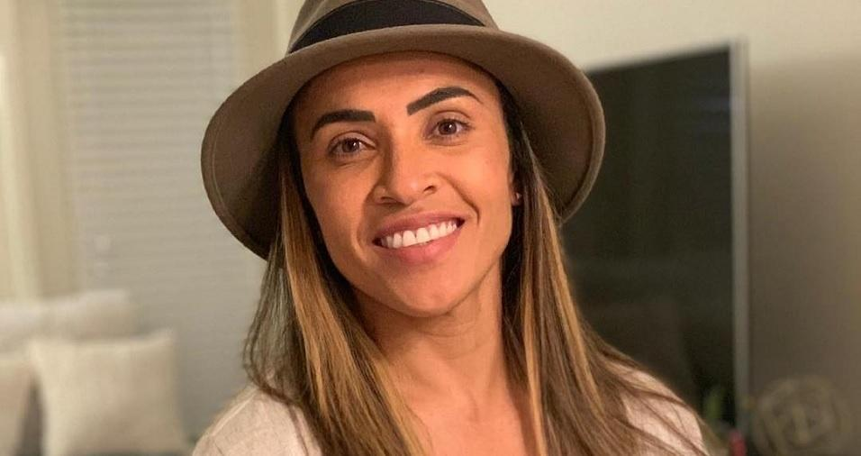
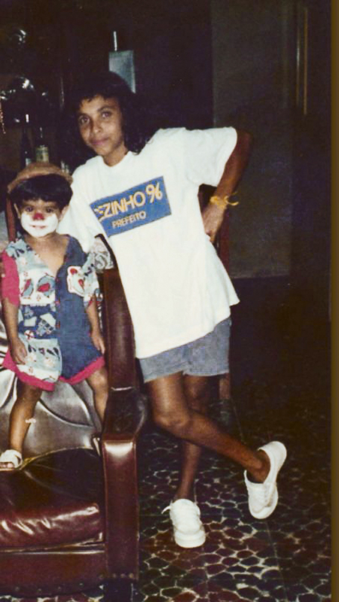
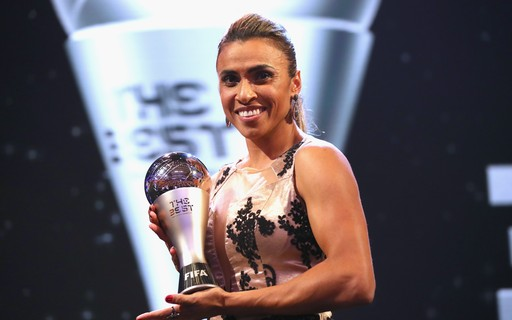

Marta Vieira da Silva nasceu em Dois Riachos, no interior de Alagoas, Brasil, no dia 19 de fevereiro de 1986.
Filha de mãe solteira, a jogadora teve uma infância muito pobre junto aos seus irmãos, saindo de casa aos 14 anos. Em entrevista para o GShow, Marta disse sobre sua própria história: "Foi uma infância muito sofrida. Não tinha nem dinheiro para comprar o que a gente necessitava, quanto mais uma câmera. Não tem registro (da infância). É uma coisa que sinto saudade, queria ter como mostrar. Acho que a foto que tenho que era menor tinha 9 anos”.
Marta iniciou sua vida no futebol em 1999, na categoria juvenil do Centro Sportivo Alagoano (CSA). Em 2000, fez parte do Vasco da Gama e foi para o Santa Cruz Futebol Clube de Minas Gerais, onde permaneceu entre 2002 e 2004.
Deu início a sua trajetória internacional em 2004, quando foi contratada pelo Umea IK da Suécia e, entre idas e vindas, passou por times nos Estados Unidos, na Europa e, também, no Brasil, conquistando títulos como artilheira e campeã por seus clubes ao longo de sua trajetória.
Pela seleção brasileira, Marta teve uma marcante participação, vestindo a camisa da Seleção pela primeira vez em 2003, nos Jogos Pan-americanos em Santo Domingo, quando a Seleção ganhou a medalha de ouro. Participou de outros jogos do Pan-americano e das olímpiadas e, ainda, da copa do mundo feminina que foi transmitida em rede nacional, pela primeira vez, em 2019 na França.
Confira a trajetória profissional completa da rainha do futebol clicando AQUI.
A importância de Marta não está presente apenas em sua caminhada de sucesso, mas também na caminhada de todas as mulheres que acreditam que seus sonhos podem se tornar realidade. Marta é hoje não só uma inspiração mas uma referência do potencial feminino ofuscado pelas questão de disparidade de gênero em toda a sociedade, ainda mais dentro de um esporte reconhecido historicamente como uma atividade masculina.
Marta é símbolo de um rompimento que representa o avanço da luta de todas as mulheres. Viva Marta, a nossa rainha do futebol!
Saiba mais clicando AQUI.
